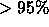

The spectro1d pipeline analyzes the combined, merged spectra output by spectro2d and determines object classifications (galaxy, quasar, star, or unknown) and redshifts; it also provides various line measurements and warning flags.
The code attempts to measure an emission and absorption redshift independently for every targeted (non-sky) object. That is, to avoid biases, the absorption and emission codes operate independently, and they both operate independently of any target selection information.
The spectro1d pipeline performs a sequence of tasks for each object spectrum on a plate: The spectrum and error array are read in, along with the pixel mask. Pixels with mask bits set to FULLREJECT, NOSKY, NODATA, or BRIGHTSKY are given no weight in the spectro1d routines. The continuum is then fit with a 5th order polynomial, with iterative rejection of outliers (e.g., strong lines). The fit continuum is subtracted from the spectrum. The continuum-subtracted spectra are used for cross-correlating with the stellar templates.
Emission Line Redshifts
Emission lines (peaks in the 1d spectrum) are found by carrying out a
wavelet transform of the
continuum-subtracted spectrum :
where g(x;a,b) is the wavelet (with complex conjugate ) with
translation and scale parameters a, b. We apply the
à trous wavelet stark97.
For fixed wavelet scale b, the wavelet transform is computed at
each pixel center a; the scale b is then increased in
geometric steps and the process repeated. Once the full wavelet
transform is computed, the code finds peaks above a threshold and
eliminates multiple detections (at different b) of a given line
by searching nearby pixels. The output of this routine is a set of
positions of candidate emission lines.
This list of lines with non-zero weights is matched against a list of common galaxy and quasar emission lines given in Table 30, many of which were measured from the composite quasar spectrum of vandenberk01 (due to velocity shifts of different lines in quasars, the wavelengths listed don't necessarily match their rest-frame values). Each significant peak found by the wavelet routine is assigned a trial line identification from the common list (e.g., Mg2) and an associated trial redshift. The peak is fit with a Gaussian, and the line center, width, and height above the continuum are stored in the SpecLine class as parameters wave, sigma, and height, respectively. If the code detects close neighboring lines, it fits them with multiple Gaussians. Depending on the trial line identification, the linewidth it tries to fit is physically constrained. The code then searches for the other expected common emission lines at the appropriate wavelengths for that trial redshift and computes a Confidence Level (CL) by summing over the weights of the found lines and dividing by the summed weights of the expected lines. The CL is penalized if the different line centers do not quite match. Once all the trial line identifications/redshifts have been explored, an emission line redshift is chosen as the one with the highest CL, and stored as z in the EmissionRedshift class. The exact expression for the emission line CL has been tweaked to match our empirical success rate in assigning correct emission line redshifts, based on manual inspection of a large number of spectra from the EDR (§ 4.10.3).
The SpecLine class also gives the errors, continuum, equivalent width,
, spectral index, and significance of each line, in parameters listed
in Table 12. We caution that the emission line measurement for
H should only be used if . In the SpecLine
class, ``found'' lines denote only those lines used to measure the emission
line redshift, while ``measured'' lines are all lines in the emission line
list (Table 30) measured at the redshifted positions
appropriate to the final redshift assigned to the object.
should only be used if . In the SpecLine
class, ``found'' lines denote only those lines used to measure the emission
line redshift, while ``measured'' lines are all lines in the emission line
list (Table 30) measured at the redshifted positions
appropriate to the final redshift assigned to the object.
A separate routine searches for high-redshift (z>2.3) quasars by
identifying spectra that contain a Ly forest signature: a
broad emission line with more fluctuation on the blue side than on the
red side of the line. The routine outputs the wavelength of the
Ly
forest signature: a
broad emission line with more fluctuation on the blue side than on the
red side of the line. The routine outputs the wavelength of the
Ly emission line; while this allows a determination of the
redshift, it is not a high-precision estimate, because the Ly
emission line; while this allows a determination of the
redshift, it is not a high-precision estimate, because the Ly line is intrinsically broad and affected by Ly
line is intrinsically broad and affected by Ly absorption.
The spectro1d pipeline stores this as an additional
emission-line redshift. This redshift information is stored in the
EmissionRedshift class (Table 12), which
includes an association to an object in the SpecObj class. Thus
one SpecObj can have one or two EmissionRedshift objects
associated with it.
absorption.
The spectro1d pipeline stores this as an additional
emission-line redshift. This redshift information is stored in the
EmissionRedshift class (Table 12), which
includes an association to an object in the SpecObj class. Thus
one SpecObj can have one or two EmissionRedshift objects
associated with it.
If the highest CL emission line redshift uses lines only expected
for quasars (e.g., Ly , C4, C3]; see Table
30), then the object is provisionally
classified as a quasar. If any of the identified lines is broader
than 500 km sec
, C4, C3]; see Table
30), then the object is provisionally
classified as a quasar. If any of the identified lines is broader
than 500 km sec (FWHM), then the object is also provisionally
classified as a quasar for the EDR.
We expect that this threshold will change in
future data releases. These provisional classifications
will hold up if the final redshift assigned to the object (see
below) agrees with its emission redshift.
(FWHM), then the object is also provisionally
classified as a quasar for the EDR.
We expect that this threshold will change in
future data releases. These provisional classifications
will hold up if the final redshift assigned to the object (see
below) agrees with its emission redshift.
Cross-Correlation Redshifts
The spectra are cross-correlated with stellar, emission-line galaxy, and quasar template spectra to determine a cross-correlation redshift and error. The cross-correlation templates are obtained from SDSS commissioning spectra of high S/N, and comprise roughly one for each stellar spectral type from B to almost L, a non-magnetic and a magnetic white dwarf, an emission line galaxy, a composite LRG spectrum, and a composite quasar spectrum (from vandenberk01). The composites are based on co-additions of spectra each. The template redshifts are determined by cross-correlation with a large number of stellar spectra from SDSS observations of the M67 star cluster, whose radial velocity is precisely known.
When an object spectrum is cross-correlated with the stellar templates, its found emission lines are masked out; i.e., the redshift is derived from the absorption features. The cross-correlation routine follows the technique of tonry79: the continuum-subtracted spectrum is Fourier-transformed and convolved with the transform of each template. For each template, the three highest Cross-Correlation Function (CCF) peaks are found, fit with parabolas, and output with their associated confidence limits (CLs). The corresponding redshift errors are given by the widths of the CCF peaks. The cross-correlation CLs are empirically calibrated as a function of peak level based on manual inspection of a large number of spectra from the EDR. The final cross-correlation redshift is then chosen as the one with the highest CL from among all the templates.
If there are discrepant high-CL cross-correlation peaks, i.e., if the highest peak has CL < 0.99 and the next highest peak corresponds to a CL that is greater than of the highest peak, then the code extends the cross-correlation analysis for the corresponding templates to lower wavenumber and includes the continuum in the analysis, i.e., it chooses the redshift based on which template provides a better match to the continuum shape of the object. These flagged spectra are then manually inspected (see below).
The cross-correlation redshift is stored as z in the CrossCorrelationRedshift class.
Final Redshifts and Spectrum Classification
The spectro1d pipeline assigns a final redshift to each object spectrum by choosing the emission or cross-correlation redshift with the highest CL, and stores this as z in the SpecObj class. A redshift status bitmask (zStatus) and a redshift warning bitmask ( zWarning) are stored, with bitmask values given in Table 11. The CL is stored in zConf. Objects with redshifts determined manually (see below) have CL set to 0.95 (MANUAL_HIC set in zStatus ), or 0.4 or 0.65 (both MANUAL_LOC set in zStatus). Rarely, objects have the entire red or blue half of the spectrum missing; such objects have their CLs reduced by a factor of 2, so they are automatically flagged as having low confidence, and the mask bits Z_WARNING_NO_BLUE or Z_WARNING_NO_RED are set in zWarning as appropriate.
All objects are classified (in specClass)
as either a quasar, high-z quasar, galaxy,
star, late-type star, or unknown. If the object has been identified
as a quasar by the emission line routine, and if the emission line
redshift is chosen as the final redshift, then the object retains its
quasar classification. Also, if the quasar cross-correlation template
provides the final redshift for the object, then the object is
classified as a quasar. If the object has a final redshift z>2.3 (so
that Ly is or should be present in the spectrum),
and if at least 2 out of 3 redshift estimators agree on this
(the 3 estimators being the emission-line, Ly
is or should be present in the spectrum),
and if at least 2 out of 3 redshift estimators agree on this
(the 3 estimators being the emission-line, Ly , and
cross-correlation redshifts), then it is
classified as a high-z quasar. If the object has a redshift cz <
450 km sec
, and
cross-correlation redshifts), then it is
classified as a high-z quasar. If the object has a redshift cz <
450 km sec , then it is classified as a star. If the final
redshift is obtained from one of the late-type stellar
cross-correlation templates, it is classified as a late-type star. If
the object has a cross-correlation CL< 0.25, it is classified as
unknown.
, then it is classified as a star. If the final
redshift is obtained from one of the late-type stellar
cross-correlation templates, it is classified as a late-type star. If
the object has a cross-correlation CL< 0.25, it is classified as
unknown.
There exist among the spectra a small number of composite objects. Most common are bright stars on top of galaxies, but there are also galaxy-galaxy pairs at distinct redshifts, and at least one galaxy-quasar pair, and one galaxy-star pair. Most of these have the zWarning flag set, indicating that more than one redshift was found.
Additional Spectral Measures
For all objects, Gaussians are fit at the positions of all expected emission lines in the reference list (see Table 30), not just the common lines, and their parameters are stored in the class SpecLineIndex (Table 12).
For galaxies, we compute in the rest frame: the equivalent width, magnitude, and their errors of a number of standard line indices, which are useful for stellar population, age, and metallicity measures. These are stored in ew, ewErr, mag, and magErr in the class SpecLineIndex. The equivalent width and magnitude are not corrected for velocity dispersion. We only recommend the use of these line indices for stellar population studies for galaxy spectra with good signal to noise ratio: sn[0] of class SpecObj should be greater than 30.
A complete list of the lines we measure is available on our web sites. They were gathered from the following sources:
We also calculate a measure of the strength of the 4000Å break as the ratio
of the flux from 3751-3951Å to the flux from 4051-4251Å, and the ratio
of the strength of the Ca K and H lines, as integrated from 3921-3946Å and
3956-3981Å, respectively. These are also stored as ``lines'' in the class
SpecLineIndex, with the flux ratio stored in the parameter ew.
This flux ratio is used as a sanity check on the spectra. If the break is in
the wrong direction (flux decreasing with increasing  ), or if
the flux ratio is greater than 0.95, the Z_WARNING_4000BREAK bit is
set in zWarning.
), or if
the flux ratio is greater than 0.95, the Z_WARNING_4000BREAK bit is
set in zWarning.
Finally, galaxies are classified by a Principal Component Analysis (PCA) (connolly95a, as extended by connollyszalay99), using cross-correlation with eigentemplates constructed from early SDSS spectroscopic data. The 5 eigencoefficients and a classification number are stored in eCoeff and eClass, respectively, in the SpecObj class. eClass ranges from about -0.35 to 0.5 for early- to late-type galaxies.
In future data releases, we expect to implement more detailed stellar spectral classification based on a larger set of stellar templates. The velocity dispersion of each galaxy is currently a placeholder. It will be calculated and stored in a future release.
Redshift Warning flags
The zWarning bitmask mentioned above records problems that the spectro1d pipeline found with each spectrum. It provides compact information about the spectra for end users, and it is also used to trigger manual inspection of a subset of spectra on every plate. The bitmasks are listed in Table 11. Users should particularly heed warnings about parts of the spectrum missing, low signal-to-noise ratio in the spectrum, significant discrepancies between the various measures of the redshift, and especially low confidence in the redshift determination. In addition, redshifts for objects with zStatus = FAILED should not be used.
Manual Inspection of Spectra
A small percentage of spectra on every plate are inspected manually and, if necessary, the redshift, classification, zStatus, and CL are corrected. We inspect those spectra that have zWarning or zStatus indicating that there were multiple high-confidence cross-correlation redshifts, that the redshift was high (z > 3.2 for quasar or z > 0.5 for a galaxy), that the confidence was low, that signal-to-noise ratio was low in r, or that the spectrum was not measured. All objects with zStatus = EMLINE_HIC or EMLINE_LOC, i.e., for which the redshift was determined only by emission lines, are also examined. If, however, the object has a final CL>0.98 and zStatus of either XCORR_EMLINE or EMLINE_XCORR, then, despite the above, it is not manually checked. All objects with either specClass=SPEC_UNKNOWN or zStatus=FAILED are manually inspected.
Roughly 8% of the spectra in the EDR were thus inspected, of which about 1/8, or 1% overall, had the classification, redshift, zStatus, or CL manually corrected. Such objects are flagged with zStatus changed to MANUAL_HIC or MANUAL_LOC, depending on whether we had high or low confidence in the manual inspection classification and redshift. Tests on the validation plates, described in the next section, indicate that this selection of spectra for manual inspection successfully finds  of the spectra for which the automated pipeline assigns an incorrect redshift.